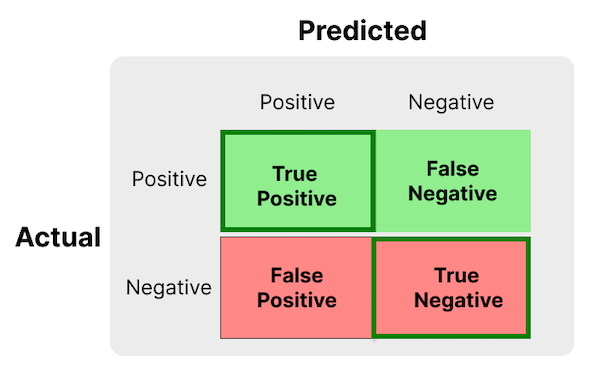

stats = {
function truePositive(positives, threshold) {
var truePositive = 0;
for (var i in positives) {
if (positives[i] > threshold) {
truePositive += 1;
}
}
return truePositive;
}
function trueNegative(negatives, threshold) {
var trueNegative = 0;
for (var i in negatives) {
if (negatives[i] <= threshold) {
trueNegative += 1;
}
}
return trueNegative;
}
function falsePositive(negatives, threshold) {
return negatives.length - trueNegative(negatives, threshold);
}
function falseNegative(positives, threshold) {
return positives.length - truePositive(positives, threshold);
}
function recall(positives, threshold) {
return truePositive(positives, threshold) / positives.length;
}
function specifity(negatives, threshold) {
return trueNegative(negatives, threshold) / negatives.length;
}
function fallout(negatives, threshold) {
return 1.0 - specifity(negatives, threshold);
}
return {
truePositive: truePositive,
trueNegative: trueNegative,
falsePositive: falsePositive,
falseNegative: falseNegative,
recall: recall,
specifity: specifity,
fallout: fallout
}
}ROC and AUC Interpretation
Introduction
A binary classification is a machine learning model that classifies input data into two classes. We need different metrics to train or evaluate the performance of ML models. The Area Under the Receiver Operating Characteristic Curve (ROC AUC) score is a popular metric for evaluating binary classification models. In this post, we will try to understand the intuition behind the ROC AUC with simple and interactive visualizations.
Subscribe to get a notification about future posts.
Recap
I suggest you also checkout the following resources:
- evidentlyai.com/classification-metrics/… - quite detailed explaination
- developers.google.com/machine-learning/… - beginner friendly explanation
- madrury.github.io/jekyll/update/statistics/… - my favourite so far that gives a probabilistic intution of ROC AUC score
- www.alexejgossmann.com/auc/ - more advanced explanation
Let’s say we have two classes (“positive” and “negative”) and a machine learning model that predicts a probability score between 0 and 1. A probability of 0.9 signifes that the input is closer to “positive” than “negative”, a probability of 0.2 signifies that the input is closer to “negative”, and so on.
However, our task is to produce a binary output: “positive” or “negative”. To achieve this, we choose a threshold. Any input with a predicted probability score above the threshold is classified as positive, while inputs with lower scores are classified as negative.
Confusion Matrix
There are four outcomes of the predicted binary output, which can be nicely summarized with the following table, called a confusion matrix:

The green row corresponds to the positive items in our dataset, while the red row corresponds to the negative items in the dataset. The columns correspond to the model predictions. The cells outlined with dark green are the items our model classified correctly, i.e., the accurate predictions of our model.
Now, we can give a few relevant metrics based on the confusion matrix.
Accuracy
Accuracy is the proportion of all accurate predictions among all items in the dataset. It is defined as:
\[ \text{Accuracy} = \frac{TP+TN}{TP+TN+FP+FN} \]
Accuracy can be misleading, especially with imbalanced datasets. For example, if 99% of our dataset is positive, a model that always predicts positive will have an accuracy of 99%, but this doesn’t provide meaningful insight. Hence, we need other metrics.
True Positive Rate
The true positive rate or recall is the proportion of accurate predictions among positive items:
\[ \text{Recall or TPR} = \frac{TP}{TP+FN} \]
The recall only considers the green row (actual positives) from our confusion table, and completely ignores the red row.
True Negative Rate
The true negative rate or specificity is the proportion of accurate predictions among negative items:
\[ \text{Specificity or TNR} = \frac{TN}{FP+TN} \]
The specificity only consider the red row (actual negatives) from our confusion table.
False Positive Rate
The false positive rate is the proportion of inaccurate predictions among negative items:
\[ \text{FPR} = \frac{FP}{FP+TN} \]
alternatively:
\[ \text{FPR}=1-\text{TNR} \]
The false positive rate is related to the true negative rate. However, we will be using FPR more than TNR in the next sections.
Visualization
Let’s setup a visualization for better understanding. Assume that we have:
- A dataset with positive and negative items
- A ML model that predicts a probability score from 0 to 1, representing the probability that the input belongs to the positive class.
Then, we can visualize our dataset and their probability predictions in the same visualization as below:
Positive items in the dataset are shown in green, and negative items are shown in red. The sizes of circles represent the predicted probability scores, with smaller circles representing scores close to 0 and larger circles representing scores close to 1. The items are ordered according to their probability scores, from smallest to largest.
Next, we choose a threshold depending on the application of our ML model. But, for now, let’s visualize the threshold as well:
The circles with dark green outline represent items that are accurately classified, in other words, true positives and true negatives.
Why not calculate the true positive (TP), false positive (FP), false negative (FP) and true negative (TN) values from the confussion matrix:
Tip: You can adjust the threshold using the slider above (give it a try), and the tables above and below will update accordingly.
And the metrics as defined above:
Play with the threshold slider and make sure that you understand different metrics, especially the true positive rate and the false positive rate. Maybe try to reproduce the metrics youself first at different thresholds and compare with the table?
ROC and AUC
ROC Curve
Choosing a specific threshold can be difficult since it depends on the particular application. Luckily we have metrics that show the performance of a ML model at varying threshold values. One of them is a receiver operating characteristic curve or ROC curve.
The term “Receiver Operating Characteristic” originates from Word War II, where it was used in radar systems for detecting enemy objects.
The ROC curve is the plot of the true positive rate (TPR) against the false positive rate (FPR) at each threshold values.
Let’s bring back a slightly modified version of our visualization:
Earlier, we have been visualizing the true negative rate. Now, we are visualizing the false positive rate, outlined with dark red.
The true positive and the false positive rates accordingly:
Now, we need to plot FPR (x-axis) against TPR (y-axis).
Tip: You can adjust the slider above, then this visualization will update accordingly.
Play with the slider above and compare the values in the table and (x, y) values of the black point.
The new 2D visualization is similar to the previous 1D visualization, except the following differences:
- The positives items (green) are visualized along the Y-axis
- The negatives items (red) are visualized along the X-axis
- The threshold is visualized by the black circle
Area Under the Curve
The area under the ROC curve is called ROC AUC score. ROC AUC stands for “Receiver Operating Characteristic Area Under the Curve”.
The ROC AUC score is a single number that summarizes the ML model’s performance across all threshold values. Note that the ROC curve summarizes with a visual plot, whereas the ROC AUC score summarizes with a single number.
The area of the light gray region in the above visualization is the ROC AUC Score.
The ROC AUC score is 0.5 for a classifier that performs no better than random guessing and approaches 1.0 for a classifier with perfect performance.
Probabilistic Interpretation
The ROC AUC score has a very nice probabilistic interpretation:
The ROC AUC is the probability that the model will predict a higher probability score to a randomly selected positive item than a randomly selected negative item.
It is nicely explained with the visualization that we already have:
Every point (e.g., the black dot above) under the ROC curve has a corresponding green circle (follow the dotted horizontal segment) and a corresponding red circle (follow the dotted vertical segment). Then, the mentioned green circle is always bigger or equal to the red circle.
Tip: Try the slider above and compare the matching green circle with the matching red circle.
This is the same interpretation as the probabilistic interpretation when the number of items in our dataset approaches infinity.
The End
I hope you enjoyed this post.
In the next post, we will work on an efficient Python implementation of the ROC AUC score based on probabilistic intuition.
Subscribe to get a notification about future posts.